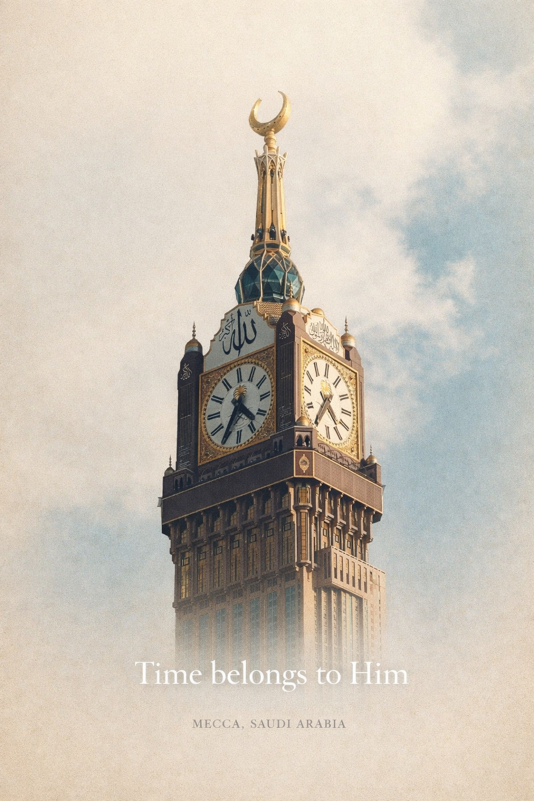
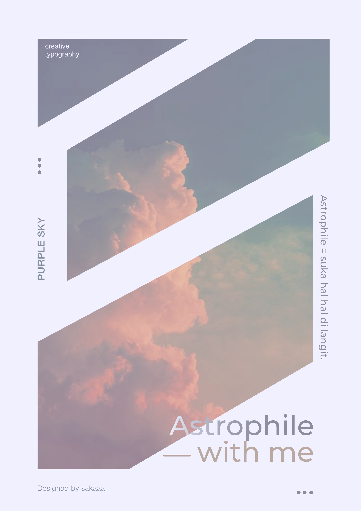

PROJECT DUA
Design Poster
Halaman ini menampilkan kumpulan karya poster untuk Project Dua.
Project Design Mockup
Fragmented Identity
An experimental poster design developed as a visual concept for sweater apparel. This piece explores the idea of identity through fragmentation, blending traditional elements with modern digitaldistortion.
The composition layers cultural textures, ornate garments, and raw environmental visuals, disrupted by glitch effects and abstract overlays. The contrast between rich red-cold fabrics and industrial surroundings creates a tension between heritage and contemporary expression.
Designed not only as a poster but as a wearable concept, this piece translates visual storytelling into fashion, where chaos, culture, and individuality collide into a bold statement.



Another Design by me :


